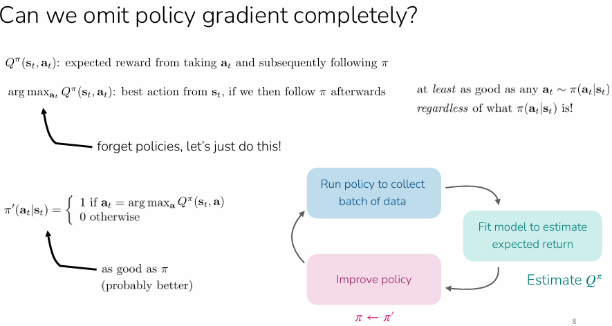

Q-Learning¶

Q-Learning RL Method¶
Core Intuition¶
Q-learning is a value-based RL method — instead of learning an explicit policy \(\pi_\theta\), we only learn a Q-function and derive the policy from it via \(\pi(a_t|s_t) = \arg\max_a \hat{Q}(s_t, a)\). This means we can skip policy gradients entirely.
Recall:
- Policy-based methods (REINFORCE, PPO): directly learns a policy \(\pi_\theta(a|s)\) — a function that maps states to aciton probabilities. Optimise \(\theta\) i.e. the weights to maximise expected return via policy gradient
- Value-based methods (DQN, Q-Learning): learn a value function — either \(V(s)\) or \(Q(s,a)\) that estimates how much future reward you’ll get. Policy is then derived implicitly, i.,e. pick the action with the highest value. No separate policy network to optimise
- Actor-critic is a hybrid: learn both a value function (critic) and policy (actor). Q-learning’s insight is that if your value function is good enough, the critic alone is sufficient and the actor is redundant.
Why This Works¶
If you have an accurate \(\hat{Q}^\pi(s,a)\) for some policy \(\pi\), then the greedy policy \(\pi'(a|s) = \arg\max_a Q^\pi(s,a)\) is at least as good as \(\pi\) — regardless of what \(\pi\) is. So we can iteratively improve by just re-estimating Q and taking the greedy action.
From Actor-Critic to Q-Learning¶
In off-policy actor-critic, the target for fitting \(\hat{Q}^\pi\) is:
\(y_i = r_i + \gamma \hat{Q}^\pi(s'_i, \bar{a}'_i) \quad \text{where } \bar{a}'_i \sim \pi_\theta(\cdot|s'_i)\)
The key insight: instead of sampling \(\bar{a}'_i\) from the current policy, just take the max over actions. This simultaneously does policy evaluation and policy improvement in one step:
\(y_i = r_i + \gamma \max_{a'} \hat{Q}_\phi(s'_i, a')\)
This is the Bellman optimality equation — it characterizes \(Q^{\pi^*}\) for the optimal policy.
Recall: Actor-Critic¶
In actor-critic, you have two separate things you're learning:
- A critic \(\hat{Q}^\pi_\phi\) that estimates "how good is taking action \(a\) in state \(s\), then following policy \(\pi\)"
- An actor \(\pi_\theta\) that you improve via policy gradients using the critic's estimates
The critic's training target uses the current policy to sample the next action:
\(y_i = r_i + \gamma \hat{Q}^\pi(s'_i, \bar{a}'_i) \quad \text{where } \bar{a}'_i \sim \pi_\theta(\cdot|s'_i)\)
This means: "the value of \((s_i, a_i)\) is the immediate reward plus the discounted value of whatever action \(\pi\) would take next."
The greedy improvement insight
Now suppose your critic is accurate. You know \(Q^\pi(s, a)\)for every state-action pair. You define a new policy:
\(\pi'(a|s) = \arg\max_a Q^\pi(s, a)\)
This new policy is guaranteed to be at least as good as \(\pi\). Because \(Q^\pi(s, a)\) tells you the expected return of taking \(a\) then following \(\pi\) afterwards. If you pick the \(a\) that maximizes this, you're doing at least as well as whatever \(\pi\) would have picked — by definition, the max is ≥ any particular sample from \(\pi\).
This is the policy improvement theorem from the lecture's thought exercise (slide 7–8, the 2D navigation example).
The key leap to Q-learning¶
So the actor-critic loop is:
- fit Q → use policy gradient to update \(\pi\) → repeat.
- But if the improved policy is just \(\arg\max_a Q(s,a)\), why bother learning \(\pi_\theta\) at all? We can just define the policy as the argmax of Q. No actor needed.
-
But there's a second, subtler move. In the critic's target:
\(y_i = r_i + \gamma \hat{Q}^\pi(s'_i, \bar{a}'_i) \quad \text{where } \bar{a}'i \sim \pi\theta(\cdot|s'_i)\)
If our improved policy is \(\arg\max\), then sampling \(\bar{a}'_i \sim \pi_\theta\) is equivalent to just taking \(\max_{a'} Q(s'_i, a')\). So we replace the sample with a max:
\(y_i = r_i + \gamma \max_{a'} \hat{Q}_\phi(s'_i, a')\)
This is doing two things at once:
- Policy evaluation — fitting Q to satisfy the Bellman equation
- Policy improvement — the max already encodes "what would the improved policy do"
In actor-critic these were separate steps (fit Q, then gradient step on \(\pi\)). In Q-learning they're fused into a single update.
Bellman Optimality Equation¶
The standard Bellman equation for any policy \(\pi\) is:
\(Q^\pi(s, a) = r(s, a) + \gamma \mathbb{E}_{s'}\left[\mathbb{E}_{a' \sim \pi(\cdot|s')}[Q^\pi(s', a')]\right]\)
For the optimal policy \(\pi\), since \(\pi^*\) always takes the best action, the inner expectation becomes a max:
\(Q^{\pi^*}(s, a) = r(s, a) + \gamma \mathbb{E}_{s'}\left[\max_{a'} Q^{\pi^*}(s', a')\right]\)
So when we use \(y_i = r_i + \gamma \max_{a'} Q(s'_i, a')\) as our target, we're trying to make our Q-function satisfy this optimality equation — meaning we're directly targeting \(Q^{\pi^*}\) rather than \(Q^\pi\) for some intermediate policy.
Full conceptual pipeline:¶
actor-critic → notice the actor is redundant → fold the policy improvement into the Q target → end up directly optimizing for \(Q^*\).
The Full Algorithm¶
- Collect data: Take action \(a \sim \pi(\cdot|s)\) from some exploration policy, get transition \((s, a, s', r)\), store in replay buffer \(\mathcal{R}\)
- Sample a batch: Draw \({s_i, a_i, r_i, s'_i}\) from \(\mathcal{R}\)
- Compute targets: \(y_i = r_i + \gamma \max_{a'} \hat{Q}_\phi(s'_i, a')\)
- Gradient update: \(\phi \leftarrow \phi - \alpha \sum_i \frac{dQ_\phi}{d\phi}(s_i, a_i)\big(Q_\phi(s_i, a_i) - y_i\big)\)
- Policy is implicit: \(\pi(a_t|s_t) = \arg\max_a \hat{Q}_\phi(s_t, a)\)
Repeat steps 2–4 for \(K\) gradient steps (inner loop), then collect more data (outer loop).

Key Property: Off-Policy¶
Q-learning is off-policy — the data in \(\mathcal{R}\) can come from any policy, not just the current one. This is because the Bellman optimality equation holds for all \((s,a)\) regardless of how the data was collected. However, you still need sufficient action coverage in the data.

Exploration Strategies¶
Since Q-learning is off-policy, we need an exploration policy to collect diverse data:
- Epsilon-greedy: With probability \(\epsilon\) take a random action, otherwise take \(\arg\max_a Q(s,a)\). Typically anneal \(\epsilon\) from large to small during training.
- Boltzmann exploration: Sample actions proportional to \(\exp(Q_\phi(s, a))\), giving soft preference to higher-valued actions.


Convergence¶
- Tabular case (table of Q-values for every \((s,a)\)): Guaranteed to converge to \(Q^{\pi^*}\)
- Function approximation (neural nets): No convergence guarantee in general — can diverge even with linear Q. But can be made to work well in practice.
Practical Stabilization Tricks¶
1. Target Networks (DQN)¶
Problem: The target \(y_i = r_i + \gamma \max_{a'} Q_\phi(s'_i, a')\) is a moving target — as \(\phi\) updates, the targets shift, causing instability.
Solution: Freeze a copy of the parameters \(\phi' \leftarrow \phi\) and use \(Q_{\phi'}\) for computing targets. Update \(\phi'\) only periodically (every \(N\) outer steps). The inner loop then becomes supervised learning against fixed labels.
\(y_i = r_i + \gamma \max_{a'} Q_{\phi'}(s'_i, a')\)

2. Double DQN¶
Problem: \(\max_{a'} Q_{\phi'}(s', a')\) overestimates Q-values because the same noisy network both selects the best action and evaluates its value.
Key decomposition: \(\max_{a'} Q_{\phi'}(s', a') = Q_{\phi'}(s', \arg\max_{a'} Q_{\phi'}(s', a'))\) — same network does both jobs.

Solution: Use the current network \(Q_\phi\) to select the action, but the target network \(Q_{\phi'}\) to evaluate:
\(y = r + \gamma Q_{\phi'}(s', \arg\max_{a'} Q_\phi(s', a'))\)
If the noise in \(Q_\phi\) and \(Q_{\phi'}\) is decorrelated, the overestimation problem goes away.

3. N-Step Returns¶
Problem: 1-step bootstrap (\(r + \gamma \max Q\)) is low variance but high bias when Q is inaccurate. Full Monte Carlo (\(\sum_t r_t\)) is unbiased but high variance.
Solution: Use N-step targets as a middle ground:
\(y_{j,t} = \sum_{t'=t}^{t+N-1} \gamma^{t'-t} r_{j,t'} + \gamma^N \max_{a} Q_{\phi'}(s_{j,t+N}, a)\)
Tradeoffs:
- ✅ Less biased than 1-step bootstrap (more real rewards, less reliance on Q)
- ✅ Typically faster learning, especially early in training
- ❌ Only fully correct when data is on-policy (the intermediate rewards came from a past policy)
- Common fix:
- just ignore the off-policy issue and use \(N > 1\) anyway
- Can also dynamically choose N to only use data the follows current policy (if data mostly on-policy and action space is small)
- Use importance sampling
When to Use Q-Learning vs. Alternatives¶
| Algorithm | When to use |
|---|---|
| PPO & variants | Stability, ease-of-use; don't care about data efficiency |
| DQN & variants | Discrete actions or low-dim continuous actions |
| SAC & variants | Care most about data efficiency; okay with tunin |